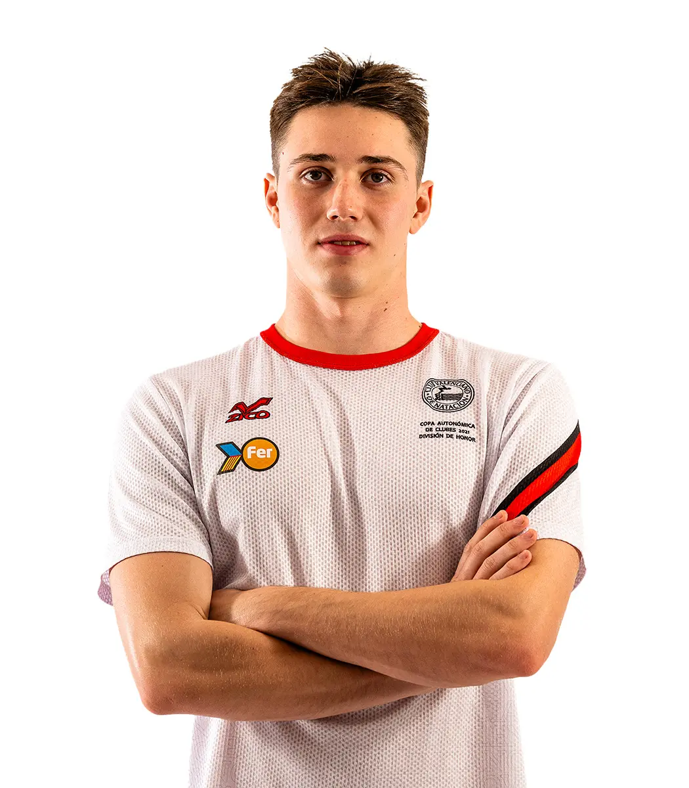

Enrique José Alhambra Mollar
"Kike"
Especialidad: Natación adaptada - espalda y braza
Edad: 21 años
Club: CD Aquatic Campanar

Biografía
Enrique es un nadador paralímpico español, reconocido por su dedicación, disciplina y pasión por la natación adaptada. A lo largo de su trayectoria, ha sabido superar obstáculos y destacar en su categoría, representando con orgullo al deporte paralímpico naciona
Logros Deportivos
- 🥉 100m mariposa S13 de los Juegos Paralímpicos de París
- 🥉relevo 4 x 100m libres mixto en los Juegos Paralímpicos de París
- 100m mariposa S13 y de plata en los 100m espalda S13 en el Campeonato del Mundo en Manchester